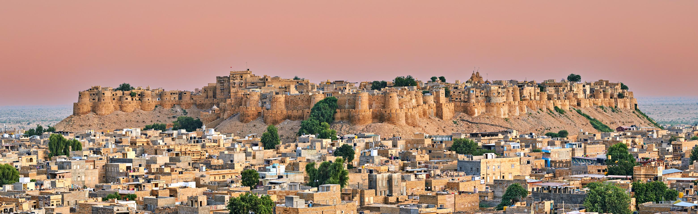

Golden City • Desert • Forts • Adventure
Jaisalmer, known as the Golden City, is famous for its golden sandstone architecture, magnificent forts, traditional havelis and the vast Thar Desert.
From exploring the historic fort to enjoying beautiful desert landscapes and memorable experiences, Jaisalmer offers a unique journey through Rajasthan.
October to March is generally a comfortable period to explore Jaisalmer and enjoy desert sightseeing.
Discover the beauty of the Thar Desert and enjoy unforgettable moments surrounded by golden sands.
Capture beautiful views of forts, havelis and spectacular desert landscapes.
Find Jaisalmer and plan your journey.
Explore the magnificent Jaisalmer Fort and its beautiful golden sandstone architecture.
Experience the peaceful beauty of golden sand dunes and the unique desert landscape.
Discover a fascinating combination of heritage, culture, architecture and desert scenery.
Plan your next memorable journey with RDR Tour & Travels.
Book Your Trip